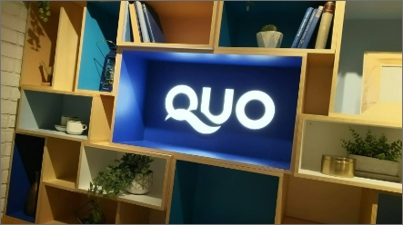
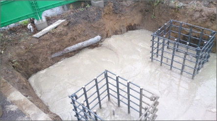

初めての方へ
看板つ〜はんにできること
看板製作・デザイン・取付・施工など看板のことなら何でもお任せください。
スタッフが一丸となって、看板を製作いたします。
スタッフが一丸となって、看板を製作いたします。

ヒアリング・ご提案
看板のプロが、親切丁寧にヒアリングいたします。看板の知識がなくでも大丈夫！「こうしたい」というご希望に沿って、ぴったりの看板をご提案します。イメージにあったデザインもご提案できますので、お気軽にご相談くださいませ。

豊富な種類
案内板、野立看板、切り文字など…看板つ〜はんには豊富な種類がございます。取り付け場所や、イメージにぴったりの看板が見つかるはず。当HPにない看板をご希望の場合は、お気軽にお問い合わせくださいませ。

制作・施工
当社は制作だけでなく、施工まで一括で行なっております。お客様の「こんな看板が欲しい！」というイメージの世界観をそのままに実現できるよう、当社の制作・デザイン・施工のスタッフが一丸となって取り組んでおります。
初めて看板製作をご依頼する方へ
看板について何も分からない！
具体的に作りたいものが決まっていない！
そんな方でもお任せください。
「こんなイメージの看板が欲しい」と ご相談いただければ、看板のプロがご提案いたします。
まずはお気軽にご相談ください。
具体的に作りたいものが決まっていない！
そんな方でもお任せください。
「こんなイメージの看板が欲しい」と ご相談いただければ、看板のプロがご提案いたします。
まずはお気軽にご相談ください。